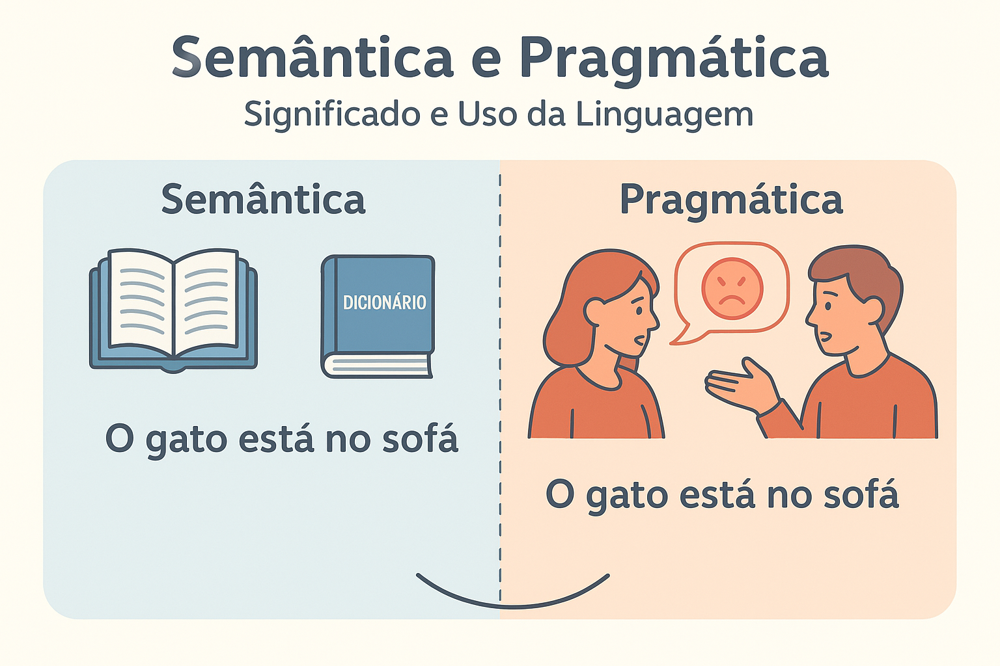

Semântica e Pragmática: Significado e Uso da Linguagem
A linguagem é muito mais do que um simples conjunto de palavras organizadas por regras gramaticais. Ela é um fenômeno social e cognitivo que permite não apenas a transmissão de informações, mas também a construção de sentidos, intenções e interações. Nesse processo, dois campos da linguística se destacam: semântica e pragmática, áreas que estudam o significado, mas sob perspectivas diferentes.
Diferença entre Semântica e Pragmática
A semântica é a área da linguística que se ocupa do significado literal das palavras, frases e enunciados. Ela busca compreender como os elementos linguísticos produzem sentido dentro de um sistema de regras.
Já a pragmática vai além do sentido literal: ela estuda como o uso da linguagem em contextos reais de comunicação altera, amplia ou redefine o significado.
- Semântica = significado literal, estável e dependente da língua.
- Pragmática = significado em uso, dependente do contexto, do falante e da situação.
Atos de Fala, Pressupostos e Implicaturas
Atos de fala
A pragmática é fortemente influenciada pela teoria dos atos de fala, desenvolvida por J. L. Austin e John Searle. Segundo eles, ao falar, não apenas descrevemos o mundo, mas fazemos coisas com palavras.
- Declarativo: “Declaro aberta a sessão.”
- Diretivo: “Feche a janela, por favor.”
- Compromissivo: “Prometo que vou ajudar você.”
- Expressivo: “Parabéns pela conquista!”
Pressupostos
Os pressupostos são informações implícitas que permanecem válidas mesmo quando uma frase é negada.
Exemplo: “Maria parou de fumar.” → Pressupõe-se que Maria já fumou em algum momento.
Implicaturas
As implicaturas conversacionais, estudadas por H. P. Grice, dizem respeito a sentidos não ditos explicitamente, mas inferidos a partir do contexto.
Exemplo: Pergunta: “Você vai à festa?” → Resposta: “Tenho prova amanhã cedo.” Implicatura: a pessoa provavelmente não vai à festa.
A Influência da Intenção do Falante e da Situação de Uso
Um ponto central da pragmática é a intenção do falante. O mesmo enunciado pode carregar diferentes sentidos dependendo de quem fala, para quem fala, quando e em que situação.
Exemplo: “Está frio aqui.” Pode significar:
- Uma simples constatação (semântica).
- Um pedido implícito para fechar a janela (pragmática).
- Uma crítica indireta ao anfitrião que não ligou o aquecedor (pragmática).
A situação comunicativa — lugar, tempo, relação entre interlocutores, convenções culturais e até tom de voz — molda profundamente o sentido da linguagem.
Conclusão
A distinção entre semântica e pragmática mostra como a linguagem é um fenômeno multifacetado. Enquanto a semântica busca o significado estável, a pragmática evidencia a flexibilidade e a riqueza da comunicação humana, revelando como intenções, contextos e interações constroem sentidos dinâmicos.
Referências
AUSTIN, J. L. How to Do Things with Words. Oxford: Clarendon Press, 1962.
SEARLE, John R. Speech Acts: An Essay in the Philosophy of Language. Cambridge: Cambridge University Press, 1969.
GRICE, H. P. Logic and Conversation. In: COLE, P.; MORGAN, J. (eds.). Syntax and Semantics, vol. 3. New York: Academic Press, 1975.
KLEIBER, Georges. Semântica. São Paulo: Contexto, 1990.
FIORIN, José Luiz. Elementos de Análise do Discurso. São Paulo: Contexto, 2008.
TRAVAGLIA, Luiz Carlos. Introdução à Linguística: Domínios e Fronteiras. São Paulo: Cortez, 2001.